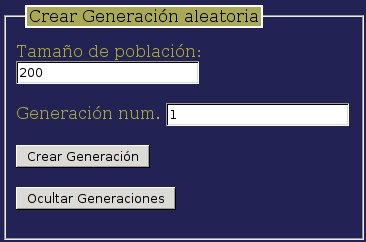
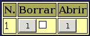
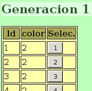

Vamos ahora a crear una población aleatoria en nuestro proyecto. Para ello pulsamos sobre el botón “Generaciones” del menu principal. En esta parte existen diversos formularios que nos permiten realizar diferentes tipos de operaciones. En nuestro caso nos interesa el apartado Crear Generación aleatoria

Tecleamos un tamaño para la población, en el ejemplo: 200 individuos, y pulsamos sobre el botón “Crear Generación”. No veremos ningún efecto salvo que el número de generación por defecto que aparece ahora en el formulario es el 2 en lugar de 1.
Si queremos ver las generaciones que hemos creado pulsaremos sobre el botón “Ver Generaciones”. Aparecerá una tabla que mostrará la generación recién creada:

Si pulsamos sobre el botón “Abrir” de la generación que nos interese ver nos aparecerá a la derecha una tabla con la lista de individuo de esa población y sus valores fenotípicos. Los botones de la columna “Selec.” sirven para seleccionar individuos concretos como parentales de una nueva generación, aunque no los utilizaremos en esta ocasión.

Al final de la tabla veremos un enlace para descargar los datos. Dependiendo del navegador que utilizemos podemos pulsar sobre él para descargar un archivo de texto con los datos de esta generación, o pulsar con el botón derecho del ratón y elegir “Guardar enlace como…” o alguna opción similar.
Elegiremos donde queremos guardar ese archivo en nuestro ordenador y, posteriormente lo analizaremos en una hoja de cálculo. el nombre del archivo, por ejemplo “27_1_datos.csv” indica la Id del proyecto (27) y la generación (1) a los que corresponde.